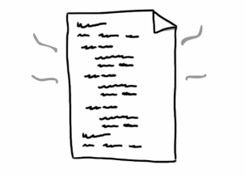
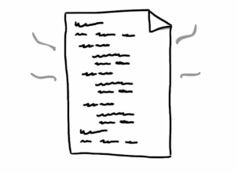
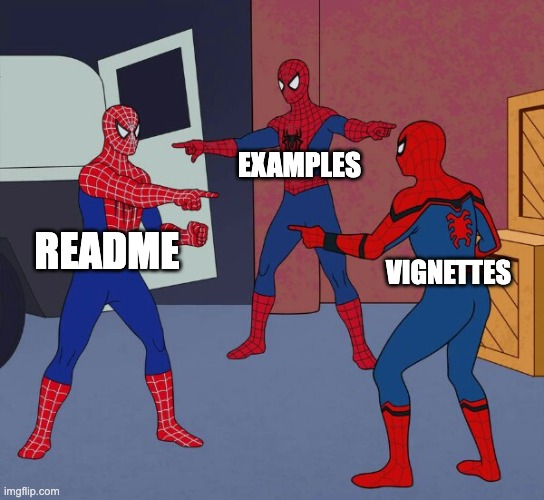
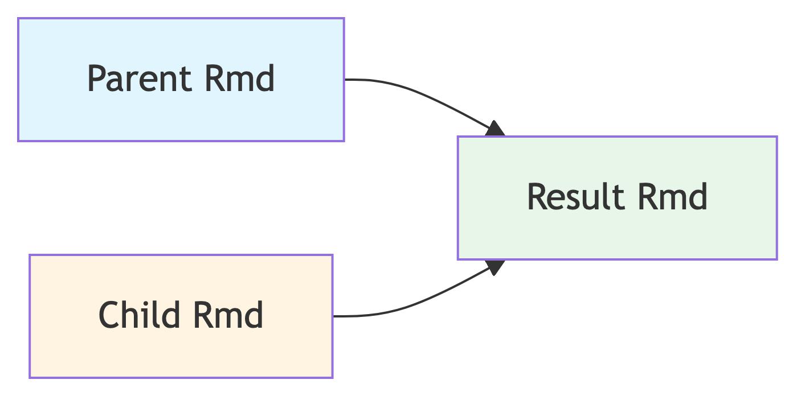
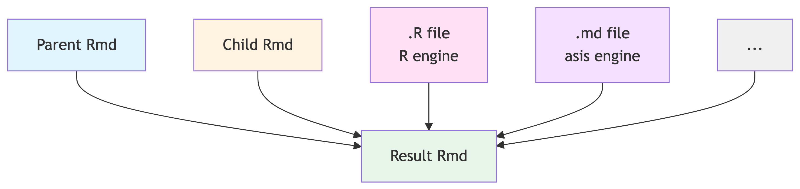

Indrajeet Patil
Source code for these slides can be found on GitHub.
“Copy and paste is a design error.” - David Parnas
Why should you not repeat yourself?
The DRY Principle states that:
Every piece of knowledge must have a single representation in the codebase.
That is, you should not express the same thing in multiple places in multiple ways.

It’s about knowledge and not just code
The DRY principle is about duplication of knowledge. Thus, it applies to all programming entities that encode knowledge:
Duplicated code requires parallel changes in multiple places; DRY code eliminates this need.
Easier to maintain - update knowledge in one place only.
Routines developed to remove duplicated code can become general-purpose utilities.
Further Reading
Thomas, D., & Hunt, A. (2019). The Pragmatic Programmer. Addison-Wesley Professional. (pp. 30-38)
Understand distinction between DRY and DAMP (Descriptive And Meaningful Phrases)
Apply DRY to remove duplication in:
Avoiding repetition in documentation.
Users consult different sources depending on context.
README: While exploring the package repository.
Vignettes: When first learning how to use a package.
Manual: When checking details about a specific function.
Including crucial information in only one place risks users missing it in certain contexts.
Some documentation is important enough to be included in multiple places (e.g. in the function documentation and in a vignette).
How can you document something just once but include it in multiple locations?

You can stitch an R Markdown document from smaller child documents.

Information is stored once in child documents and reused multiple times across parents.
Store child documents in the manual directory and reuse them.
Child documents
├── DESCRIPTION
├── man
│ └── rmd-children
│ └── info1.Rmd
│ └── ...Tips
.Rmd files with full .Rmd capabilities.rmd-fragments).Roxygen: list(markdown = TRUE) field in the DESCRIPTION file.R CMD check or for {pkgdown} website.Include child document contents in multiple documentation locations.
Vignette
├── DESCRIPTION
├── vignettes
│ └── vignette1.Rmd
│ └── ...
│ └── web_only
│ └── vignette2.Rmd
│ └── ...README
├── DESCRIPTION
├── README.RmdInclude child document contents in multiple documentation locations.
Manual
├── DESCRIPTION
├── R
│ └── foo1.R
│ └── foo2.R
├── man
│ └── foo1.Rd
│ └── foo2.Rd
│ └── ...Important
The underlying assumption here is that you are using {roxygen2} to generate package documentation.
You can include contents from any file in .Rmd, not just a child document!

Like child documents, store other document types in the man/ folder.
Reusable content
├── DESCRIPTION
├── man
│ └── rmd-children
│ └── info1.Rmd
│ └── ...
│ └── md-fragments
│ └── fragment1.md
│ └── ...
│ └── r-chunks
│ └── chunk1.R
│ └── ...Folder names
Name folders to describe their contents (e.g., r-examples, yaml-snippets, md-fragments).
Include various file contents in multiple documentation locations.
Vignette
├── DESCRIPTION
├── vignettes
│ └── vignette1.Rmd
│ └── ...
│ └── web_only
│ └── vignette2.Rmd
│ └── ...README
├── DESCRIPTION
├── README.RmdInclude child document contents in multiple documentation locations.
Manual
├── DESCRIPTION
├── R
│ └── foo1.R
│ └── ...
├── man
│ └── foo1.Rd
│ └── ...Important
The underlying assumption here is that you are using {roxygen2} to generate package documentation.
Summary on how to repeat documentation
If you are overwhelmed by this section, note that you actually need to remember only the following rules:
Store reusable document files in the /man folder.
When you wish to include their contents, provide paths to these files relative to the document you are linking from.
If it’s a child .Rmd document, use the child option to include its contents.
If it’s not an .Rmd document, use the file option to include its contents and use appropriate {knitr} engine. To see available engines, run names(knitr::knit_engines$get()).
Example packages that use reusable component documents to repeat documentation.
Avoiding repetition in vignette setup.
Setup chunks for vignettes often contain duplication.
Some setup code is identical across vignettes.
├── DESCRIPTION
├── vignettes
│ └── vignette1.Rmd
│ └── vignette2.Rmd
│ └── ...How can this repetition be avoided?
Avoid this by moving common setup to a script and sourcing it from vignettes. If you have many reusable artifacts, store scripts in a /setup folder.
Option 1
├── DESCRIPTION
├── vignettes
│ └── setup.ROption 2
├── DESCRIPTION
├── vignettes
│ └── setup
│ └── setup.RSourcing common setup
No parallel modification
Modify common setup in one place only!
Packages in the wild that use this trick.
Avoiding repetition with example datasets.
Create new datasets when existing ones don’t illustrate your functions well.
Using dataset exdat with function foo() in examples, vignettes, and README requires defining it multiple times.
In vignettes
How can this repetition be avoided?
Define data once, save it, and ship it with the package.
Store datasets in data/ and document them in R/data.R.
Don’t forget!
data-raw/ for future updates.LazyData: true in DESCRIPTION when including datasets.exdat can now be used everywhere without redefining it.
No parallel modification
Update the dataset in one place only!
Examples of R packages that define datasets and use them repeatedly.
Avoiding repetition in unit tests.
A unit test describes expected output.
(actual) (expected)
Testing functions with a range of inputs often recycles test patterns.
Not DRY
But such recycling violates the DRY principle. How can you avoid this?
multiplier.R
# Function to test
multiplier <- function(x, y) {
x * y
}
# Tests
test_that(
desc = "multiplier works as expected",
code = {
expect_identical(multiplier(-1, 3), -3)
expect_identical(multiplier(0, 3.4), 0)
expect_identical(multiplier(NA, 4), NA_real_)
expect_identical(multiplier(-2, -2), 4)
expect_identical(multiplier(3, 3), 9)
}
)Write parameterized unit tests using {patrick}.
Repeated test pattern
expect_identical() used repeatedly.
Parametrized test pattern
expect_identical() used once.
Combinatorial explosion
The parametrized version may not seem impressive for this simple example, but it becomes exceedingly useful when there is a combinatorial explosion of possibilities. Creating each such test manually is cumbersome and error-prone.
Like user-facing datasets, define developer-facing test datasets once and reuse them across multiple tests.
Either location works for saving datasets.
├── DESCRIPTION
├── tests
│ └── data
│ └── script.R
│ └── testdat1.rdata
│ └── testdat2.rdata
│ └── ...├── DESCRIPTION
├── tests
│ └── testthat
│ └── data
│ └── script.R
│ └── testdat1.rdata
│ └── testdat2.rdata
│ └── ...Save the script!
Always save the script used to create datasets. This script:
Without stored datasets, datasets are defined multiple times across test files.
Examples of R packages that save datasets required for unit testing.
Avoiding repetition when signaling exceptions
Functions use exceptions (messages, warnings, errors) to signal unexpected events. Similar exceptions are often signaled across functions.
E.g., for functions that don’t accept negative values:
input validation
unit testing
How can this repetition be avoided?
Extract exception message strings into named functions and store them in a list.
exceptions.R
Why not include the entire validation?
You can move the entire if() block to only_positives_allowed() and create a new validation function.
But this is not done here to address the most general case where:
if() blockUse these functions to signal exceptions.
Input validation
Unit testing
No parallel modification
Change the condition string in one place only!
Alternatively, move entire validations to new functions:
Input validation
Unit testing
Exceptions are usually useful only within their package. However, export generic exceptions to reuse them across packages.
DRYing up exceptions in one package does the same for many!
Why a list?
Storing exceptions in a list is optional - individual functions work too.
Lists offer advantages:
Simpler NAMESPACE: One export for all exceptions instead of dozens that can overpower the package API.
Extendability: Easily append imported exceptions with package-specific ones (e.g., exceptions$my_new_exception <- function() {...}).
Example of R package that create a list of exception functions and exports it:
Example of R package that imports this list and appends it:
Avoiding repetition when importing external functions.
Instead of using :: to access external package functions (rlang::warn()), specify imports explicitly via #' @importFrom.
Collect repeated imports in a single file instead of specifying them multiple times.
Import statements scattered across files:
Examples of R packages that list the NAMESPACE imports in a single file this way.
These techniques make R package development faster, more maintainable, and less error-prone.
These meta-level topics are beyond this presentation’s scope. See these resources to get started:
And Happy (DRY) Package Development! 😊
Check out my other slide decks on software development best practices